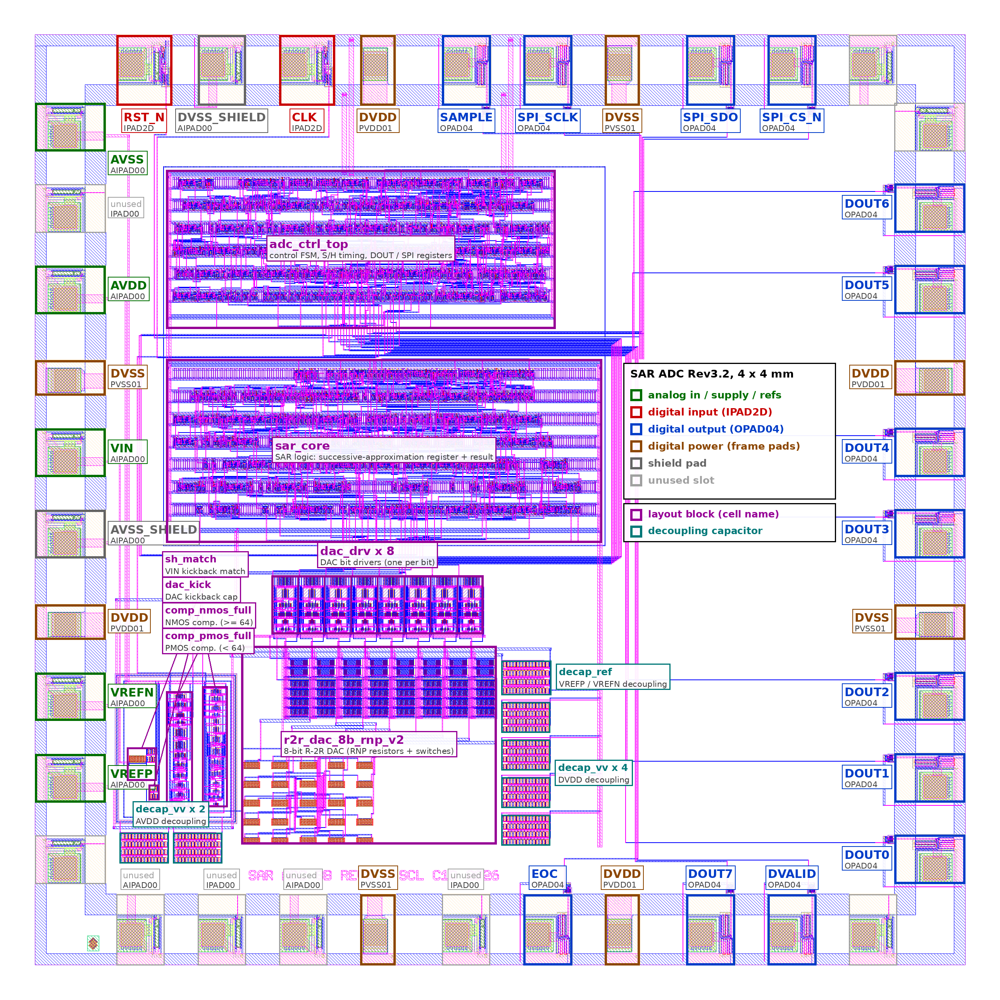
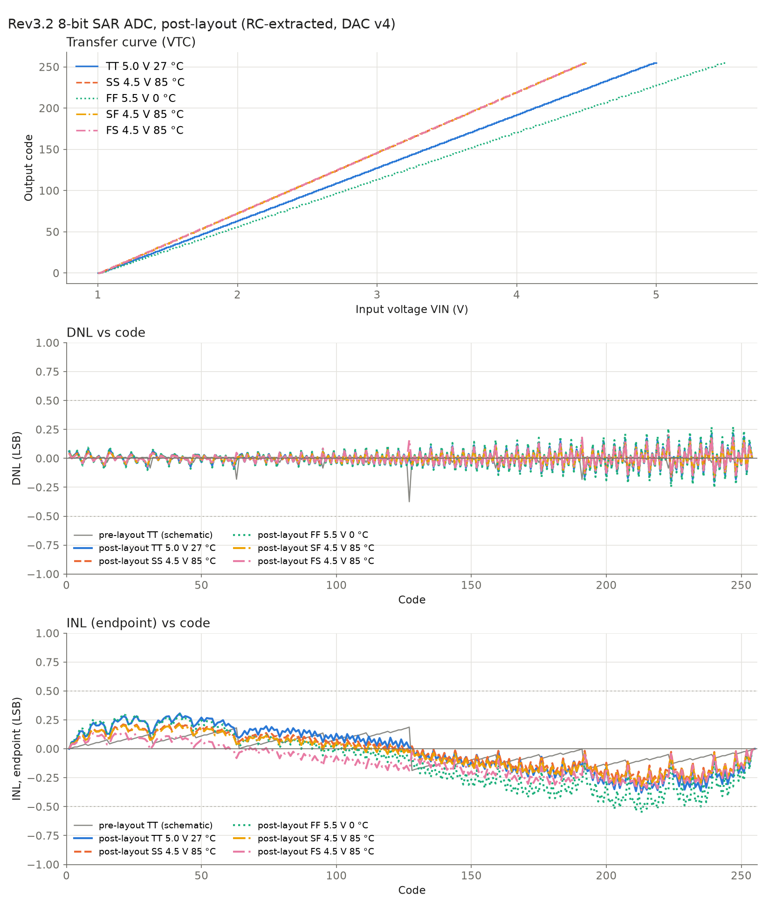

Voice AI on Indian silicon
Swar: offline voice AI on a home-grown chip
An 8-bit ADC we designed for India's SCL 1.2 µm fab, paired with keyword AI that runs on the device.
- Imported ears. Voice devices depend on imported audio chips.
- Cloud brains. Most voice AI needs the internet: latency, privacy and connectivity costs.
- The gap. There is no Indian-fab "ear" for voice interfaces.

Our ADC chip: 4 × 4 mm, SCL 1.2 µm, layout verified.
1 / 5
How it works
The chip hears, the FPGA cleans, the AI understands
input
Microphone
Preamp and sample-and-hold on the board.
our chip
8-bit SAR ADC
2 MS/s, designed for SCL 1.2 µm.
Basys3 FPGA
Oversampling filter
CIC + FIR to 16 kHz audio, about 10-bit quality.
ESP32-S3
Keyword AI
Log-mel features and a 21.7k-parameter CNN.
output
Action
10 commands, no internet needed.
The trick is oversampling. Sampling 125× faster than the audio rate and filtering on the FPGA
turns a cheap 8-bit chip into voice-quality audio: about 10 bits in the voice band.
2 / 5
The chip we built
A complete ADC, verified ready for fabrication
8-bit
SAR, R-2R DAC
7.8–7.9
ENOB (bits)
≤ 0.27
DNL (LSB), no missing codes
13.9 mW
power at 400 kS/s
5 V
supply, 4 V input range
4 × 4 mm
die, SCL standard frame
2 MS/s
max sample rate
0 / match
DRC errors / LVS
- Post-layout verified: every transistor and wire, at all process corners.
- Cross-checked: Cadence Spectre and ngspice agree code for code.

Post-layout transfer curve, DNL and INL at TT, SS and FF.
3 / 5
Voice AI results
Keyword accuracy, 10 keywords, 1000 test clips
+16 points over a plain 8-bit converter on quiet speech, within 3 points of a 16-bit mic.
Simulation with the post-layout chip model; silicon pending. Voice-band quality rises from 7.4 to about 10 bits after FPGA oversampling.
4 / 5
Impact and next steps
Private, low-cost voice control on Indian silicon
- Homes and rural areas: low-cost voice control that works offline.
- Assistive devices: hands-free control for the elderly and people with disabilities.
- Education: an open voice-AI kit built on an Indian-fab chip.
Code and results: github.com/angelgarg/swar-voice-adc
- Tape out the chip at SCL.
- Build the board: mic, sample-and-hold, Basys3, ESP32-S3.
- Live keyword demo on real silicon.
- More keywords and Indian languages.
- Retune the AI on measured silicon data.
Our ask: support for fabrication and board build, and mentorship on deployment.
5 / 5